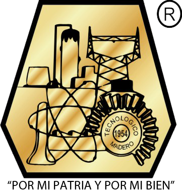
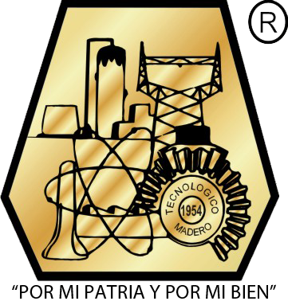

Av. Primero de Mayo 1610 Los Mangos 89469 Ciudad Madero, Tamaulipas Tamps. México
La primera piedra de la institución fue colocada el 20 de noviembre de 1950, pero sus actividades educativas iniciaron en 1954 ofreciendo cursos técnicos.
En 1956 se iniciaron los programas a nivel licenciatura en Ingeniería Química, Eléctrica y Mecánica. La historia del ITCM inicia con la labor del Ing. Luis Hidalgo y Castro, quien concibió la idea de fundar una casa de estudios técnicos que permitiera a los jóvenes de la región recibir una formación profesional del más alto nivel sin tener que emigrar a otras ciudades. Tras vencer múltiples obstáculos de carácter político, económico y social, se hizo posible reunir inicialmente la cantidad de 25 mil pesos, que fue el principio virtual del Instituto Tecnológico de Ciudad Madero. Posteriormente, gracias a la colaboración de las Secciones Petroleras de la Zona Norte, se logró reunir un millón de pesos del patronato en 1950. En el mes de septiembre de ese mismo año, el entonces Presidente de la República, Lic. Miguel Alemán Valdés, autorizó el convenio tripartito en el que se establecería la cooperación de PEMEX, la Secretaría de Educación Pública y el Patronato, cada uno con un millón de pesos, para la construcción del instituto, bajo la supervisión del Instituto Politécnico Nacional. Después de 4 años, las clases dieron inicio el 2 de septiembre de 1954 con 511 alumnos uniformados de guinda y blanco. En justo reconocimiento a su labor, la superioridad otorgó el cargo de director al ingeniero Luis Hidalgo y Castro. Los cursos a nivel licenciatura iniciaron en 1956 con las carreras de Ingeniería Eléctrica, Mecánica y Química. En 1961 se procedió a la apertura de Ingeniería Industrial y en 1975 se iniciaron las carreras de Geología y Geofísica. A mediados de la década de los ochenta se abrieron las carreras de Ingeniería Electrónica e Ingeniería en Sistemas Computacionales. La más reciente carrera, Licenciatura en Informática, dio inicio en septiembre de 1995. Su director actual, a partir de abril de 2014, es la Dra. Ana María Mendoza Martínez.